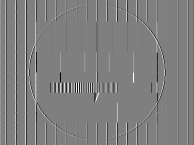
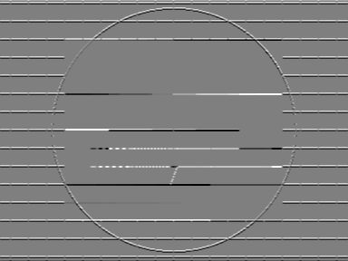
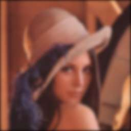
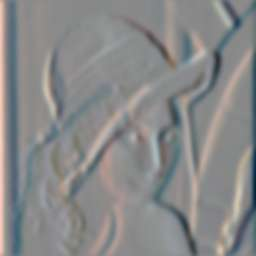
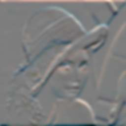
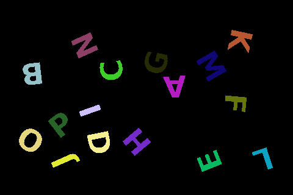

Filters
Sobel Operator
X-Gradient

This is an example on how to compute the Sobel x-gradient. A correlation of the input image with the following separable filter is performed.
require 'hornetseye_rmagick'
require 'hornetseye_xorg'
include Hornetseye
img = MultiArray.load_ubyte 'http://www.wedesoft.de/hornetseye-api/images/grey.png'
img.sobel( 0 ).normalise.show
Y-Gradient

This is an example on how to compute the Sobel y-gradient. A correlation of the input image with the following separable filter is performed.
require 'hornetseye_rmagick'
require 'hornetseye_xorg'
include Hornetseye
img = MultiArray.load_ubyte 'http://www.wedesoft.de/hornetseye-api/images/grey.png'
img.sobel( 1 ).normalise.show
Gaussian Blur

This is an example on how to apply a Gauss blur filter. The filter can be applied to colour images as well.
require 'hornetseye_rmagick'
require 'hornetseye_xorg'
include Hornetseye
img = MultiArray.load_ubytergb 'http://www.wedesoft.de/hornetseye-api/images/lena.jpg'
img.gauss_blur( 3.0 ).show
Van Cittert Deconvolution
Van Cittert deconvolution is an iterative algorithm for reversing a convolution with a known point spread function. To demonstrate the algorithm, the result of the Gaussian blur is used. The Van Cittert algorithm then is applied to this image to estimate the original input image. The first iteration of the algorithm uses the blurred image as an estimate.
require 'hornetseye_rmagick'
require 'hornetseye_xorg'
include Hornetseye
SIGMA = 3.0
N = 20
img = MultiArray.load_ubytergb( 'http://www.wedesoft.de/hornetseye-api/images/lena.jpg' ).gauss_blur( SIGMA ).to_ubytergb
g = img.to_sfloatrgb
N.times { g = img + g - g.gauss_blur( SIGMA ) }
g.clip.show
Wiener Filter
The Wiener filter is the optimal linear filter for denoising and deblurring. The filter requires prior knowledge about the autospectrum of the signal, the point spread function of the blur, and the autospectrum of the noise. In this example white noise is assumed. To demonstrate the algorithm, a Gaussian blur is applied to the input image and the Wiener filter is used to estimate the input signal.
require 'hornetseye_fftw3'
require 'hornetseye_rmagick'
require 'hornetseye_xorg'
include Hornetseye
class Node
def radius
w, h = *shape
lazy w, h do |i,j|
Math.sqrt( ( i - w / 2 ) **2 + ( j - h / 2 ) ** 2 )
end
end
def spectrum( alpha )
w, h = *shape
( 255.0 / ( 1.0 + ( radius / alpha ) ** 2 ) ).shift -w / 2, -h / 2
end
def blur( sigma )
w, h = *shape
retval = MultiArray.ubyte( w, h ).fill!
retval[ w / 2, h / 2 ] = 1
retval.gauss_blur( sigma ).shift -w / 2, -h / 2
end
def wiener( alpha, noise, sigma = nil )
if typecode < RGB_
result = MultiArray(typecode.float, dimension).new *shape
result.r, result.g, result.b = [ r, g, b ].collect do |c|
c.wiener alpha, noise, sigma
end
result
else
si = spectrum( alpha ) ** 2
if sigma
bf = blur( sigma ).fft
( bf.conj * si / ( bf.abs ** 2 * si + noise ** 2 ) * fft ).ifft.real
else
( si / ( si + noise ** 2 ) * fft ).ifft.real
end
end
end
end
NOISE = 2.0
SIGMA = 3.0
img = MultiArray.load_ubytergb( 'http://www.wedesoft.de/hornetseye-api/images/lena.jpg' ).gauss_blur( SIGMA ).to_ubytergb
img.wiener( img.shape[0] * 0.1, NOISE, SIGMA ).clip.show
Gauss Gradient
X-Gradient

This is an example on how to compute the Gaussian x-gradient.
require 'hornetseye_rmagick'
require 'hornetseye_xorg'
include Hornetseye
img = MultiArray.load_ubytergb 'http://www.wedesoft.de/hornetseye-api/images/lena.jpg'
img.gauss_gradient( 3.0, 0 ).normalise.show
Y-Gradient

This is an example on how to compute the Gaussian y-gradient.
require 'hornetseye_rmagick'
require 'hornetseye_xorg'
include Hornetseye
img = MultiArray.load_ubytergb 'http://www.wedesoft.de/hornetseye-api/images/lena.jpg'
img.gauss_gradient( 3.0, 1 ).normalise.show
Custom Filters
+------+------+------+
| -k | -k | -k |
+------+------+------+
| -k | 8k+1 | -k |
+------+------+------+
| -k | -k | -k |
+------+------+------+
HornetsEye supports fast convolution with custom filters. In this example a 3x3 sharpness filter is created and used to sharpen the input image (here k=0.4). Note that the filter in this example is not separable. If your filter is separable you should exploit this to improve the speed of the filtering operation.
require 'hornetseye_rmagick'
require 'hornetseye_xorg'
include Hornetseye
K = 0.4
filter = MultiArray[ [ -K, -K, -K ], [ -K, 8 * K + 1, -K ], [ -K, -K, -K ] ]
img = MultiArray.load_ubytergb 'http://www.wedesoft.de/hornetseye-api/images/lena.jpg'
result = img.convolve filter
result.clip.show
Connected Components Labeling

Connected component analysis assigns the same label to neighbouring pixel which have the same value.
require 'hornetseye_rmagick'
require 'hornetseye_xorg'
include Hornetseye
img = MultiArray.load_ubyte 'http://www.wedesoft.de/hornetseye-api/images/letters.png'
components = (img >= 0x7F).components
palette = Sequence.ubytergb components.max + 1
palette.r, palette.g, palette.b = *(1 .. 3).collect do
Sequence(UBYTE).random palette.size, 256
end
palette[0] = 0
components.lut(palette).show